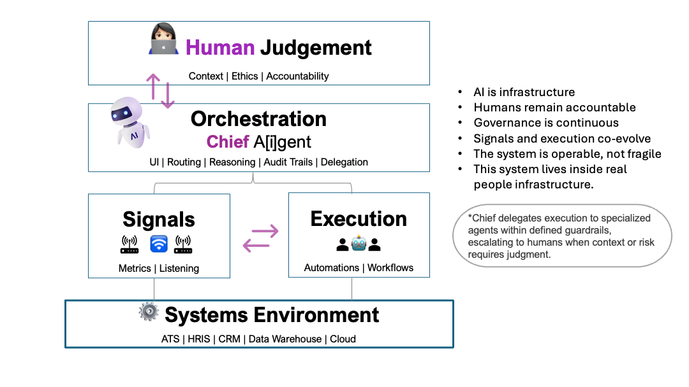

Not another vendor stack — a toolchain that runs in the tools teams already use, with guardrails and auditability.
I build workflow-first tools for People Ops and Talent teams — then connect them into a governed system so signals turn into decisions, not dashboards.
📄 Read: Why 95% of AI Pilots Fail & What the Successful 5% Do Differently
These are the working pieces — interactive demos that diagnose, route, and reduce People Ops workload inside real constraints. Each tool is designed for human-in-the-loop operation and measurable outcomes.
Pipeline health diagnostics: pass-through rates, bottlenecks, root-cause prompts, and “what to do next.”
Increase throughput without losing signal: structured evaluation, rubrics, and escalation paths.
Quality-first sourcing workflow: evidence standards, signal checks, and consistency guardrails.
Turn messy feedback into decision-ready themes: survey + open-text synthesis with governance.
Real problems → a tool-assisted workflow → an outcome. Each case links to the demo and the underlying system logic.
Find where the funnel stalls, identify likely causes, and propose fixes that respect capacity constraints.
Translate demand into targets using pass-through rates, capacity, and timing constraints.
Save hours while increasing screening capacity — without turning evaluation into a black box.
Tools are the interface. The system is the operating model: shared signals, governed decision logic, auditability, and escalation paths. If you want architecture and how it all connects, start here.
Explore the system →
What can safely auto-execute, what requires approval, and what must always escalate — with auditability built in.
Open to roles in People Analytics, Talent Intelligence, People Ops, and Recruiting Operations — especially teams building internal AI capabilities.